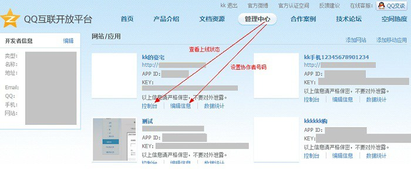
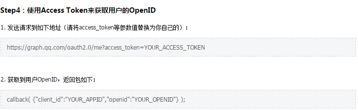
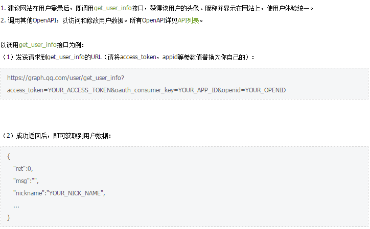

qq登录-网站接入方式
- Step1: 申请接入，获取appid和appkey
- Step2: 开发应用，并设置协作者帐号进行测试联调
- Step3: 放置QQ登录按钮
- Step4: 获取Access Token （授权码模式）
- Step4: 获取Access Token （简化模式）
- Step5: 通过Access Token获取用户的OpenID
- Step6: 调用OpenAPI，来请求访问或修改用户授权的资源
填写网站相关信息，获取appid和appkey
网站内容以及网站向QQ空间同步的内容必须满足：
1. 符合国家法律法规以及道德标准，传播内容健康向上，能给用户以正确的价值观引导；
2. 无色情、反动、暴力等违反中华人民共和国任何法律法规的内容；
3. 不准含有腾讯虚拟物品或衍生产品交易的内容、不准含有模仿腾讯中奖信息等钓鱼网站惯用的诈骗信息。
涉及腾讯相关产品的虚拟物品交易信息网站主要有：发布大量QQ号和游戏账号买卖、刷钻、刷Q币、盗号、出售以及制作本公司业务外挂、 制作本公司衍生产品（如QQ空间模版、日志模版等），以公司名义发布假中奖信息等。

“QQ登录”按钮放置的位置必须易于用户查找，即在网站界面上可以很容易找到“QQ登录”标识。

1. 用户访问客户端，后者将前者导向认证服务器：
页面导向：https://graph.qq.com/oauth2.0/authorize
参数:
response_type:code
client_id:第三方应用的appID
state:当前客户端的当前状态，可以指定任意值，认证服务器会原封不动的返回这个值
redirect_uri: 重定向URI
scope: 申请的权限范围
2. 用户选择是否给予客户端授权（此处由用户操作）
3. 假设用户给予授权，认证服务器将用户导向客户端事先制定的“redirect_uri”
code: 授权码，有效期很短，通常为10分钟，客户端只能使用该码一次
state: 如果客户端的请求中包含这个参数，认证服务器的回应也必须一模一样包含这个参数
4. 客户端收到授权码，向认证服务器申请令牌。 对用户不可见
授权码获取：https://graph.qq.com/oauth2.0/token
参数:
grant_type: authorization_code
client_id
client_secret
code
redirect_uri
认证服务器核对授权码和redirect_uri，确认后，向客户端发送访问令牌和更新令牌
返回值
access_token
refresh_token
expires_in

1. 客户端将用户导向认证服务器
页面导向： https://graph.qq.com/oauth2.0/authorize
参数：
response_type:token
client_id:第三方应用的appID
redirect_uri: 重定向URI
scope: 申请的权限范围
state:当前客户端的当前状态，可以指定任意值，认证服务器会原封不动的返回这个值
2. 用户决定是否给予客户端授权
3. 假设用户给予授权，认证服务器将用户导向客户端事先制定的“redirect_uri”
重定向，同时在Hash部分带如下参数：
access_token
expires_in
通过window.location.hash读取#


微博登录-网站接入方式
- Step1: 创建网站应用
- Step2: 开发应用，并设置协作者帐号进行测试联调
- Step3: 调试微博登录功能
- Step3: 网站接入审核
在网站首页需要加入微博验证用的头：<meta property="wb:webmaster" content="40ae36150b2a6197" />
如果验证无法通过，则在根目录加入验证文件，此文件在微博验证页面即可获取。
通过验证后，即可获取项目的appID和appKey
在网站编辑页面添加写作者帐号，用以调试登录
oauth2/authorize 请求用户授权码 get
oauth2/access_token 获取授权过的access token post
oauth2/get_token_info 授权信息查询接口 post
此为OAuth2.0的授权码授权模式
微连接主要审核点：
• 1、网站可正常访问：若页面无法打开，或加载时间过长，或未建设完成的网站、或空白网站将无法通过审核；
• 2、站点已部署微连接产品：微博登录或社会化组件，组件在页面上体现且组件正常显示；
• 3、微博登录使用Oauth 2.0的授权方式；
• 4、正确上传网站图标，无网站图标或图标不清晰，将无法通过审核；
• 5、网站具有ICP备案号，未提供或提供与页面不一致的ICP备案号将不能通过审核，境外网站需提交相应证明材料；